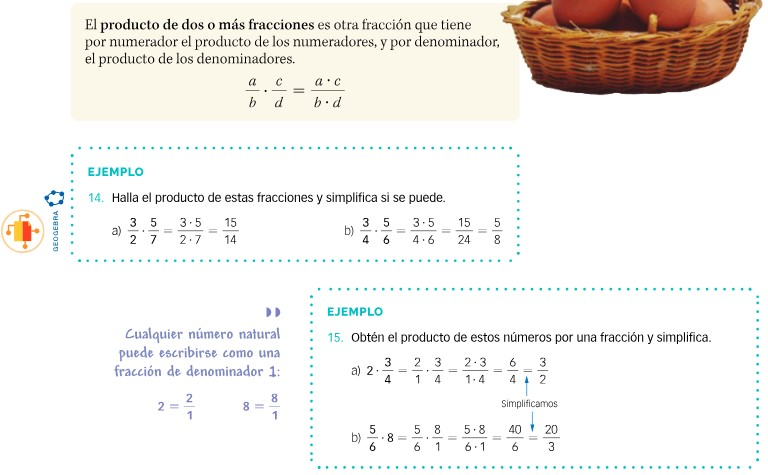
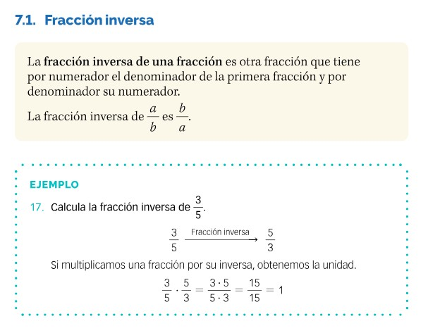
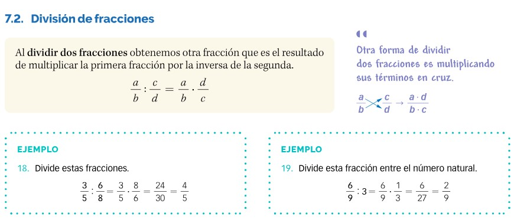

Multiplicación de fracciones
El producto de dos o más fracciones es otra fracción que tiene por numerador el producto de los denominadores, y por denominador el producto de los denominadores. Es decir: es otra fracción que se obtiene multiplicando "horizontalmente" las dos fracciones iniciales.
En el caso de que tengamos que multiplicar una fracción por un número entero, bastará con ponerle al numero entero denominador 1, y efectuar la multiplicación.
Veamos un ejemplo obtenido del libro de Santillana, página 70

División de fracciones: Inversa de una fracción
La fracción inversa de una fracción es otra fracción que al multiplicarlas nos da de resultado la unidad. La inversa no es otra que la tiene por numerador el denominador de la primera, y por denominador el numerador de la segunda. Es decir: La inversa de una fracción es la que se obtiene de "girarla", invertir el numerador con el denominador.
Veamos un ejemplo obtenido del libro de Santillana, página 71

División de fracciones
Dividir dos facciones consiste en multiplicar la primera de ellas con la inversa de la otra.
Por tanto, antes de operar, "invertimos" la segunda y MULTIPLICAMOS. ¡Si: has oído bien!
Veamos un ejemplo obtenido del libro de Santillana, página 71
